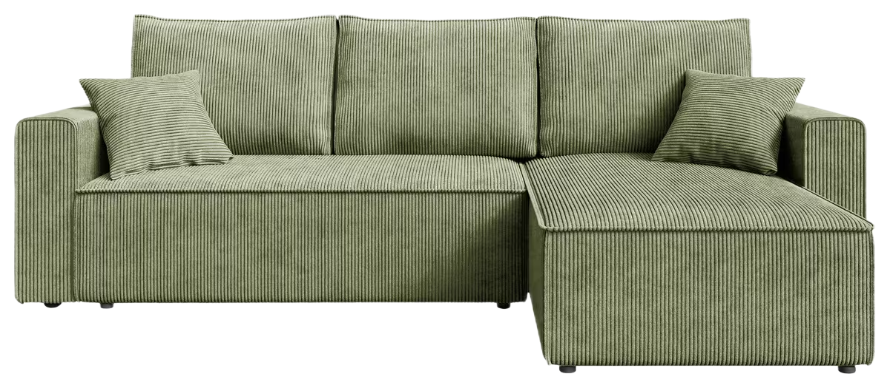
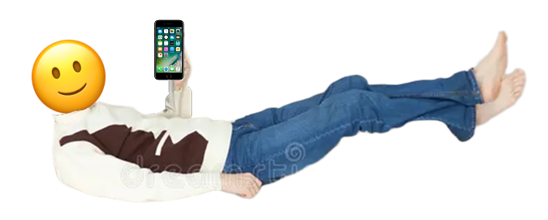
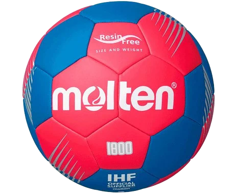
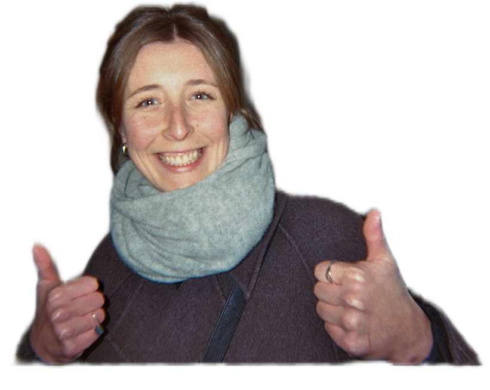
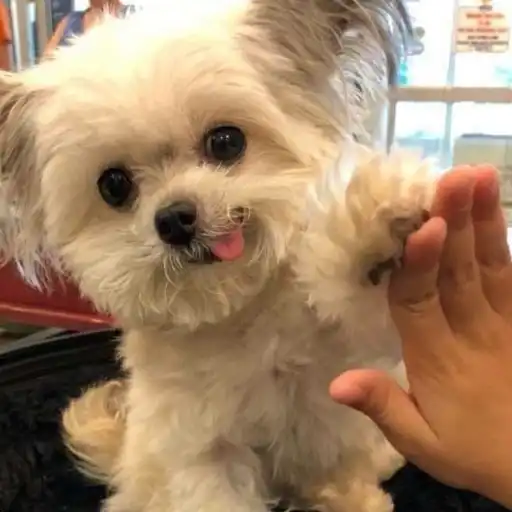
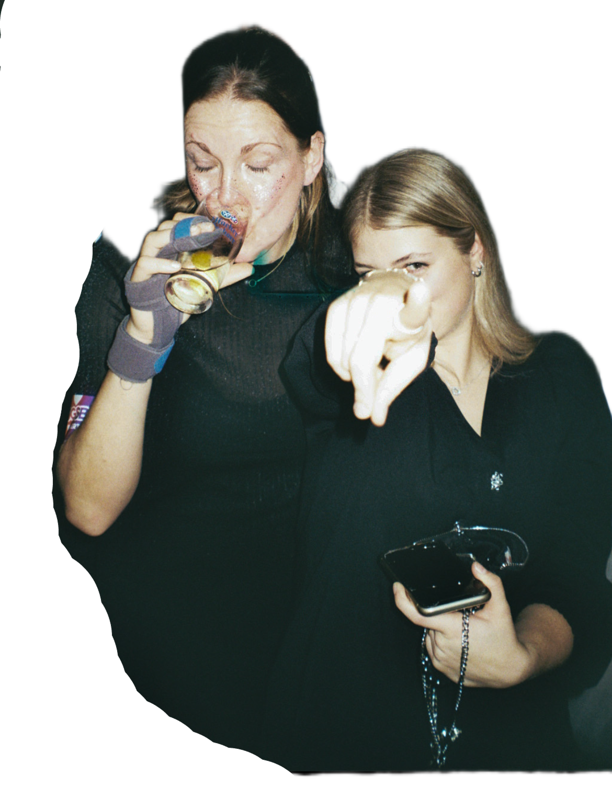
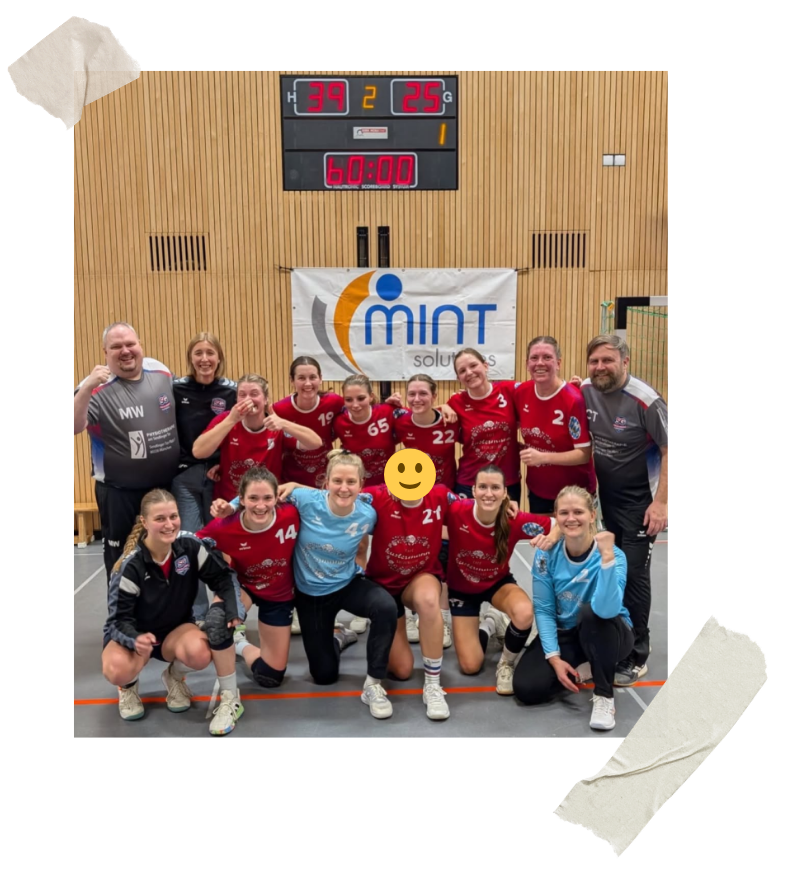
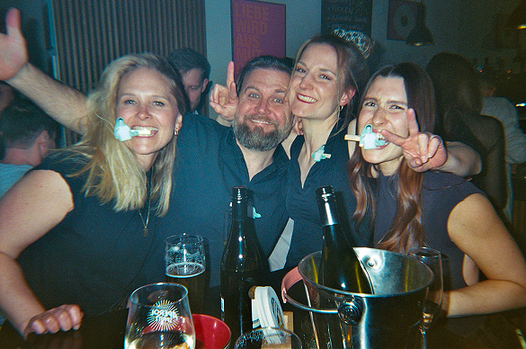

Dienstag Abend: Netflix und Scrollen?
Schon ganz nett, aber irgendwie fehlt dir was. Nur was..?
Scroll für deine Story ↓
Vielleicht...
- 🏃♀️ Auspowern beim Sport
- 😇 Zeit mit sweeten Teamkolleginnen
- 🍻 Feierabend-Schorle

Das alles und
noch viel mehr...
kannst du bei uns haben:
Damen 1
SG Süd Blumenau

Hardfacts
Wir spielen in der Bezirksoberliga (die letzten zwei Saisons gar nicht so schlecht!).

Und wir suchen genau DICH als Verstärkung.

Was wir bieten
- ✨ Junges & lustiges Team
- 🍺 Top Performance in der 3. Halbzeit
- 📅 Di & Do Abend Training
- 🚇 Hallen an der U3 / U6
Und außerdem richtig cool:
Wir haben einen neuen, motivierten Coach, also keine festgefahrenen Strukturen - sei von Anfang an dabei!


Kopf aus.
Harz an.
Okay Spaß, wir spielen ja BOL also ohne Harz.
Aber weißt schon was gemeint ist 🫶

Spaß > Stress

Noch mehr Eindrücke?
UNSER INSTAGRAM9. Juni.
Start der Vorbereitung.
Komm einfach vorbei!